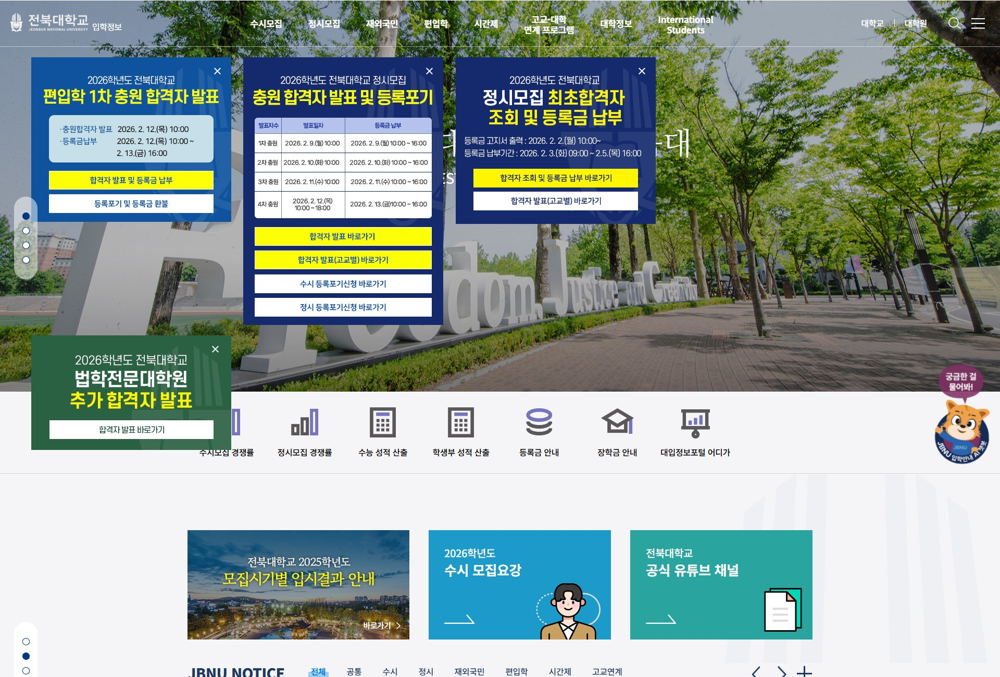
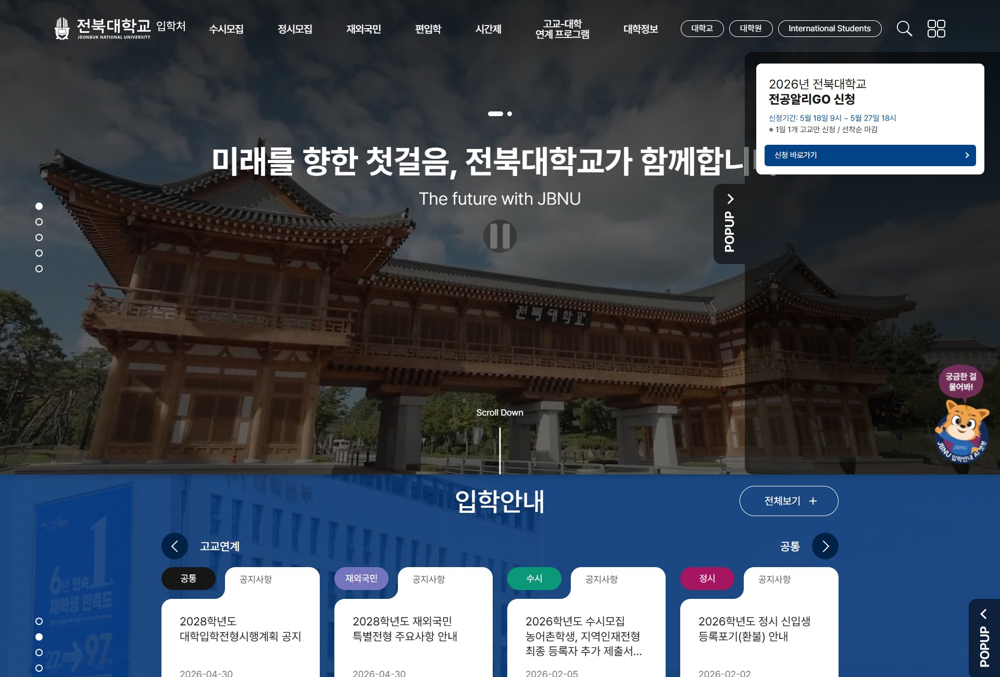
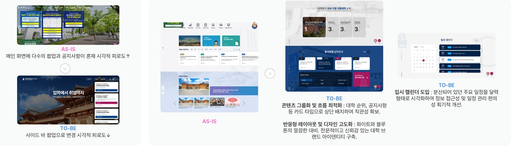
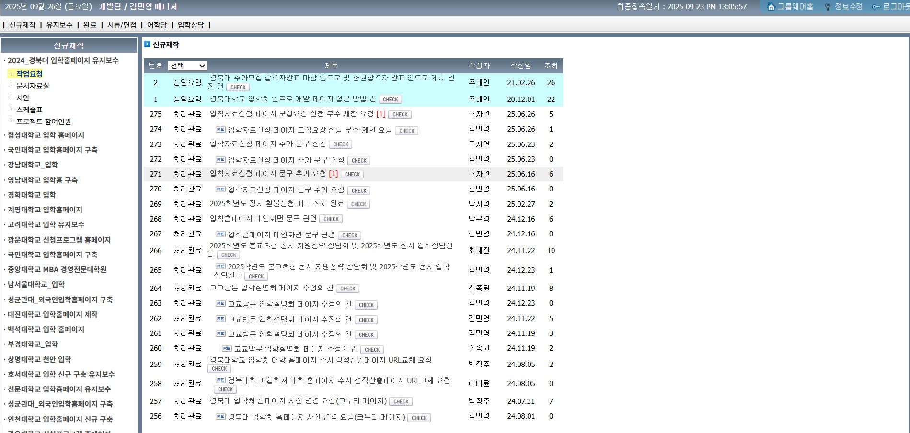
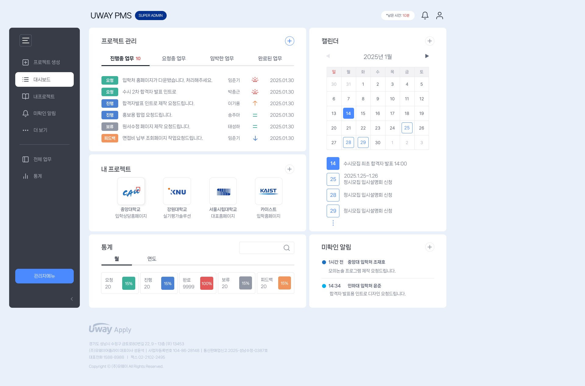
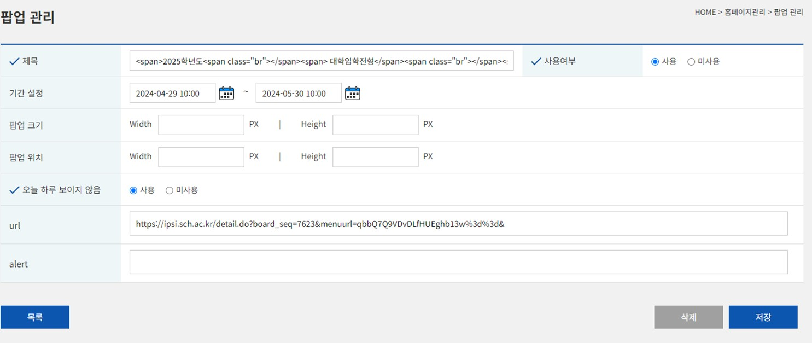
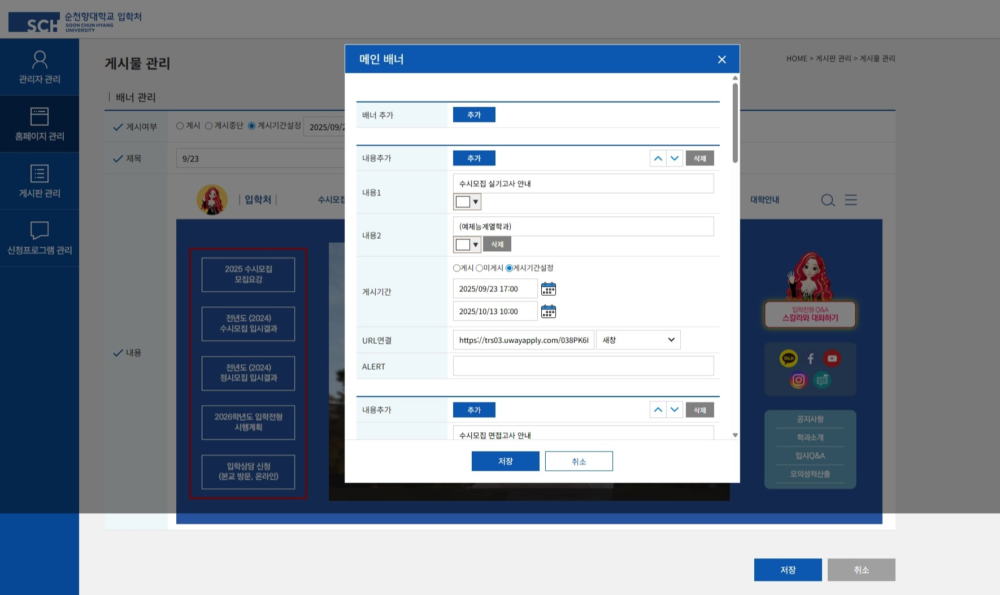

전북대학교
입학 홈페이지 UI/UX 개편
기획형 운영정형화된 대학 입시 사이트를 글로벌 레퍼런스 기반으로 리뉴얼하고, 입시 캘린더·CMS 연동 사이드바 팝업을 기획자가 직접 역제안
Phase 1~5 상세 보기
Phase 1문제 정의 & Scope
- 10년 전 UI 스타일을 답습해 정보 과잉·복잡한 내비게이션 문제가 누적
- 메인 화면에 팝업이 중첩 노출되어 브랜드 노출이 저해되고, 긴급 공지마다 하드코딩으로 대응
Scope In
- 메인 UI/UX 전면 리뉴얼(그리드·반응형)
- 입시 캘린더 신규 기획·설계
- CMS 연동 사이드바 팝업 시스템
Scope Out
- 학사정보시스템 등 백엔드 DB 구조 변경
- 원서접수 프로세스 자체 개편
실제 화면AS-IS → TO-BE



Phase 4화면 설계 & 데이터 모델
- 1헤더 GNB로고 클릭 시 홈 이동, 전형별 메뉴 + 사이트맵 전체 노출
- 2비주얼 롤링관리자 등록 이미지 롤링, 비주얼별 슬로건 문구 분리 출력
- 3사이드바 팝업(신규)중첩 노출되던 팝업을 리스트형으로 통합, '오늘 하루 보지 않기' 시 재노출 억제
- 4공지사항최근 등록일 기준 내림차순, 관리자 노출 개수 제어
- 5입시 캘린더(신규)전형구분·시작일·종료일·하이라이트 태그를 CMS에서 CRUD
Phase 2~3정책 & 상태 전이
관리자가 CMS에서 노출기간을 설정하면 현재 시각 기준으로 자동 전이
전형구분(고교연계/재외국민/수시/정시) · 시작일 · 종료일 · 하이라이트 태그 필드로 CMS 입력 → 캘린더 그리드에 자동 매핑
Phase 5예외 처리
노출기간 미입력 시 저장 차단
팝업 노출 기간 중첩 시 최신 등록 우선 노출
일정 없는 날짜의 빈 상태(Empty State) 처리
모바일에서 팝업이 콘텐츠를 가리지 않도록 사이드 배치 전환
Collaboration & Impact
국내외 대학·커머스·핀테크 UI 레퍼런스를 조사해 그리드 시스템을 직접 기획하고, 클라이언트 요구를 넘어 캘린더·CMS 팝업을 역제안해 개편을 성공시켰습니다.
PMS 시스템 개편 프로젝트
법적 준수 · 데이터 파기노후화된 프로젝트 관리 시스템을 신규 구축해 업무요청·피드백·계정 프로세스를 체계화하고, 정보통신망법 기반 개인정보 파기 프로세스를 신규 설계
Phase 1~5 상세 보기
Phase 1문제 정의 & Scope
- 프로젝트 관리·업무요청(VOC)·피드백이 구두·파편화된 방식으로 진행되어 히스토리 관리와 우선순위 조율이 어려움
- 정보통신망법 등 관련 법령 준수를 위한 개인정보 파기·휴면 계정 관리 체계 부재
Scope In
- FRONT: 계정 접속·대시보드·게시판·알림·스케줄
- ADMIN: 계정관리·권한관리·프로젝트 통계·게시글 관리
- 로그인/회원가입/휴면/비밀번호 정책 수립
Scope Out
- 레거시 데이터 자동 마이그레이션 도구
- 결제·과금 기능(내부 협업 도구 성격에 한정)
실제 화면AS-IS → TO-BE


Phase 4화면 설계 & 데이터 모델
- 1로그인 정책아이디·비밀번호 5회 오기입 시 계정 자동 비활성화(관리자 해지 전까지 유지)
- 2대시보드요청/진행중/완료 업무 카운트를 진입 즉시 확인
- 3알림 정책3종 알림 구분, 로그인 알림 2개월 간격, 비밀번호 3개월 미변경 시 팝업
- 4ADMIN 4대 모듈프로젝트별 참여자 권한 CRUD는 관리자만 수행, 통계는 엑셀 온디맨드 추출
Phase 2~3정책 & 상태 전이
1년 이내 로그인 이력 없으면 휴면 전환(30일 전 고지) → 휴면 후 1년 내 미접속 시 삭제(30일 전 재고지)
| 대구분 | 중구분 | 정책 |
|---|---|---|
| 로그인/회원가입 | 회원가입 | 코드 부여 (삭제 후 재가입 시에도 신규 계정), 비밀번호 영문+숫자+특수문자 8~20자 |
| 아이디/비밀번호 찾기 | 이름/연락처로 아이디 조회, 이메일·인증번호로 비밀번호 재설정 | |
| 내 정보 수정 | 아이디·이름·소속대학교명은 관리자 확인 후에만 수정 |
Phase 5예외 처리
계정 삭제 후 동일 정보 재가입 시 신규 회원 코드로 충돌 방지
비밀번호 미변경 시 3개월마다 팝업 재노출
휴면 전환 후 삭제는 논리 삭제 → 물리 삭제 2단계
소속 대학교명 변경은 관리자 승인 후에만 반영
Collaboration & Impact
AS-IS(피드백 관리 부재·VOC 파편화·CMS 부재)를 대시보드 중심 FRONT + 4모듈 ADMIN 구조의 TO-BE로 재설계하고, 정책을 항목별로 명세화해 개발 협업 기준을 마련했습니다.
대입 합격자 발표 시스템 운영 및 실시간 대응 최적화
무장애 운영 · 실시간 관제연간 90여 개 대학의 합격자 발표 일정을 데이터화해 CMS 세팅·배포 스케줄을 최적화하고, GA4×T-con 실시간 관제로 트래픽·서버 부하까지 선제 방어해 무장애 운영을 달성
Phase 1~5 상세 보기
Phase 1문제 정의 & Scope
- 90여 개 대학의 상이한 발표 일정에 따른 트래픽 변동성과 장애 리스크, 발표 유형(최초/충원 등) 미표준화 시 데이터 노출 오류 위험
- 발표 피크 타임 서버 과부하·DB 교착(Lock)·응답 지연 우려
- 사용자 관점(유입/이탈)과 서버 관점(리소스) 데이터를 각각 다른 도구로 봐야 해 통합 판단이 어려움
Scope In
- 대학별 발표 일정 전수조사·운영 시트화 + CMS/하드코딩 세팅 표준화
- TRS 기반 데이터 정합성 모니터링 + 배포·발표 일정 교차 검증(Red Zone 회피)
- GA4·T-con 병행 실시간 트래픽/서버 모니터링 및 임계치 선제 조치 프로세스
Scope Out
- 개별 대학의 입시요강 정책 결정
- 서버 인프라 증설 등 물리 아키텍처 설계
- 접속 대기 시스템(대기열) 자체 개발
Phase 4운영 프로세스 & 데이터 흐름
사전 운영 설계 — 발표 일정·배포 표준화
- 1운영 시트대학별 발표 유형과 CMS 세팅값·배포 금지 기간을 매핑
- 2TRS 정합성합격자·등록금 인원수를 DB값 vs 화면값 두 계열로 비교, 불일치 시 알림
- 3Red Zone 회피신규 배포 요청과 발표 스케줄을 교차 대조해 트래픽 밀집 구간 회피
- 4자동 전이발표 시각 도달 여부에 따라 시스템이 자동으로 노출 전환
실시간 대응 — 트래픽·서버 관제
- 1GA4 대시보드사용자 관점(유입/이탈)을 분 단위로 실시간 추적
- 2T-con 모니터링서버 관점(리소스)을 도메인 단위 커넥션 수로 추적, GA4와 동일 타임라인 교차 확인
- 3선제 조치 트리거임계치 80% 도달 시 캐싱·스크립트 차단·DB 모니터링 3종을 조건부 실행
Phase 2~3정책 & 상태 전이
발표 시각 도달 여부에 따라 시스템이 자동 전환, 이슈 대학은 담당자가 재확인
임계치 도달 전 징후만 있으면 선제 대응 후 정상 유지로 판단, 실제 도달 시에만 접속대기 시스템 가동
① 학교·구분·발표일·서버·발표유형·처리상태·개시일·담당자(8개 필드, 90여 개교) ② GA4(분 단위 활성 사용자·유입 경로) × T-con(서버별 커넥션 수) — 사전 설계 데이터와 실시간 관제 데이터를 하나의 운영 체계로 연결
Phase 5예외 처리
동일 시간대 다수 대학 발표가 집중되면 해당 구간 배포 보류
DB-화면 불일치 발생 시 TRS 알림 기반 즉시 확인·롤백
대학 발표 일정 변경 시 시트 갱신 및 재세팅 프로세스 가동
징후만 있고 미도달 시 선제 조치 후 정상 유지로 판단
접속대기 가동 후에도 병목 지속 시 개발팀 에스컬레이션
Collaboration & Impact
발표 유형별 세팅을 표준화하고 TRS·GA4·T-con 실시간 모니터링으로 배포 리스크를 사전 차단하는 한편, 사용자 관점과 서버 관점을 하나의 타임라인에서 교차 판단하는 이중 방어 체계를 설계해, 입시 집중기간(8월~익년 2월) 서비스 가용성 100%를 유지했습니다.
KNU 오픈캠퍼스 웹 시스템 구축
유효성 검증 설계오프라인 입시 설명회(오픈캠퍼스) 신청을 위한 End-to-End 웹 신청 시스템을 신규 기획, 유효성 검증 로직과 CMS 구조를 직접 설계
Phase 1~5 상세 보기
Phase 1문제 정의 & Scope
- 오프라인 행사 신청을 받을 안정적이고 직관적인 신청 프로그램 부재
- 짧은 오픈 기간에 신청이 몰리는 트래픽 대응 및 무장애 운영 요구
- 1~6지망 학과 선택, 중복 신청 방지 등 세부 검증 로직 필요
Scope In
- 사용자 신청 Front-End(캘린더 UI·지망 선택)
- 신청 검증 로직(Validation)
- 관리자 CMS(리스트 통합·엑셀 추출·취소 제어)
Scope Out
- 행사 현장 운영(출석 체크 등)
- 학과/장소 마스터 데이터 신설·변경 프로세스
Phase 4화면 설계 & 데이터 모델
- 1일자 선택캘린더 UI에서 신청 일자를 선택
- 2지망 선택1지망 필수(미지정 시 진입 불가), 단과대학-학과 선택 시 DB 연동 실시간 필터링
- 3이중 검증지망 선택 직후 + 최종 제출 시 이중 트랜잭션 검증, 동일 날짜·학과 중복 시 차단
Phase 2~3정책 & 상태 전이
| No | 구분 | 정책 |
|---|---|---|
| 01 | Front | 1지망 필수, 2~6지망 선택 · 지망별 최대 1개 학과 |
| 02 | System | 1인 1일 1건 신청, 동일 날짜·학과 중복 시 차단 + 이중 트랜잭션 검증 |
| 03 | Front | 취소 가능 기간 경과 시 버튼 자동 비활성화 → 관리자 수동 처리 |
| 04 | Admin | 1~6지망을 학과명+장소 통합 컬럼 노출, 지망별 개별 컬럼 엑셀 추출 |
실제 서비스 정책 정의서(문서번호 POL-KNU-25-001) 4개 정책을 표로 그대로 시각화
Phase 5예외 처리
1지망 미입력 시 제출 차단
동일 날짜·동일 학과 재신청 시도 시 차단 메시지
취소 가능 기간 종료 후 관리자 수동 처리로 전환
부하 분산·DB Lock 방지 설계로 트랜잭션 무결성 확보
Collaboration & Impact
Front-End(편의)–Back-End(안정성)–Admin(데이터 관리) 3단계로 End-to-End 로직을 구조화하고, 정책 정의서로 검증 규칙을 문서화해 개발 협업 기준을 마련했습니다.
순천향대학교 입학처
메인 배너 관리 시스템(CMS) 개선
AS-IS → TO-BE팝업 관리 시스템을 우회 활용하던 배너 관리 방식의 비효율을 GUI 기반 전용 CMS로 개편해 운영 시간을 75% 단축
Phase 1~5 상세 보기
Phase 1문제 정의 & Scope
- 기존 팝업 관리 시스템을 우회 활용한 배너 관리로 운영 비효율·데이터 관리 혼선
- 텍스트 컬러·줄바꿈 등 세부 디자인 제어 시 직접 HTML 코딩 필요
- 노출 순서 변경·스케줄링 자동화 미흡으로 실시간 대응 공수 과다
Scope In
- 배너 전용 CMS 신규 설계(팝업 CMS와 분리)
- GUI 컬러/템플릿 에디터, 순서 관리, 실시간 미리보기, 게시 Toggle
Scope Out
- 배너 콘텐츠(이미지·카피) 제작(디자인팀 영역)
- 사이트 전체 CMS 통합 리뉴얼(별도 과제)
실제 화면AS-IS → TO-BE


Phase 4화면 설계 & 데이터 모델
- 1AS-IS팝업 관리 시스템을 우회 활용, HTML 문자열 통짜 저장으로 세부 제어·순서 변경 불가
- 2TO-BE제목/내용/URL/게시기간을 구조화된 필드로 분리, GUI 에디터·순서관리·Toggle로 개편
Phase 2~3정책 & 상태 전이
스케줄 기반 자동 전이와 관리자 수동 Toggle을 병행
| 관리 항목 | AS-IS | TO-BE |
|---|---|---|
| 등록 방식 | 개별 단건 등록 | 최대 4개 일괄 등록 |
| 디자인 설정 | HTML 태그 수동 입력 | 컬러 팔레트 & GUI 에디터 |
| 순서 변경 | 기능 없음 | 상하 이동 버튼 |
| 미리보기 | 부재(등록 후 확인) | 로그인 시 실시간 미리보기 |
| 운영 상태 | 게시/미게시 텍스트 | Toggle ON/OFF |
Phase 5예외 처리
게시기간 중복 시 최신 등록 우선 노출로 휴먼 에러 차단
필수 항목(제목/게시기간) 미입력 시 저장 차단
4개 초과 일괄 등록 시도 시 제한 안내
Collaboration & Impact
문제 인식 → 클라이언트 컨설팅(운영 데이터 기반 제안) → 상세 설계·ASIS-TOBE 비교표 순으로 진행해, 코드 기반 관리를 비전문가도 운영 가능한 UI 기반으로 전환했습니다.
가톨릭대학교 입학처 홈페이지 신규 구축
콘텐츠 타입 기반 설계총 151개 페이지를 6종 콘텐츠 타입으로 표준화해 IA를 설계하고, 동적 신청폼·승인 상태 전이·이원화된 개인정보 동의 체계까지 데이터 기준으로 명세화
Phase 1~5 상세 보기
Phase 1문제 정의 & Scope
- 6개 전형 카테고리(수시/정시/편입 등)의 게시판·자료실이 각각 별도 관리되어 콘텐츠 운영이 파편화
- 고교방문설명회·1:1상담 등 신청형 프로그램이 매번 개별 개발되어 재사용성이 낮음
- 클라이언트가 디자인 시안(A/B/C안)을 1~4차에 걸쳐 반복 수정 요청 → 항목별 관리자 제어 범위 확정 필요
Scope In
- 전체 사이트 IA/메뉴구조 설계(151p, 디자인 77·개발 74)
- Front/Admin 스토리보드(관리자·메뉴·게시판·프로그램·고교코드 관리)
- 신청형 프로그램 동적 신청폼 및 승인 프로세스
- 개인정보 수집·이용 동의(필수/선택 이원화)
Scope Out
- 서버·인프라 아키텍처 설계
- 대학 자체 입학전형 정책 결정, 학생부성적산출 등은 외부 Link 연동으로 대체
Phase 4화면 설계 & 데이터 모델
메뉴 1건이 7종 콘텐츠 타입 중 하나를 가지는 구조 — 동일 타입은 스키마를 공유해 신규 페이지도 개발 재작업 없이 대응
프로그램별 신청폼에 8종 필드 타입을 자유 조합 · 옵션별 정원 합은 전체 신청제한인원을 초과할 수 없도록 교차 검증
- 1고교 검색고교코드 마스터 조회 자동완성, 미존재 시 신규등록(우편번호 API)으로 분기
- 2희망일자1안·2안 캘린더 선택, 활성화된 날짜는 인원 제한 없이 신청 가능
- 3참석 정보학년별 참석 예정인원 + 담당교사 직함/성함/연락처
- 4신청 등록제출 시 상태값 '승인대기'로 저장
- 5조회/재신청승인대기만 수정 가능, 승인완료는 잠금, 승인취소는 재신청 허용
Phase 2~3정책 & 상태 전이
승인대기만 수정 가능 · 승인완료는 잠금 · 승인취소는 동일 정보로 재신청 허용
Phase 5예외 처리
고교 검색 결과 없음 → 신규 고교 등록(우편번호 API)으로 분기
옵션별 정원 합이 전체 정원 초과 시 저장 차단 + 안내 문구
신청기간 종료 시 리스트 상태 자동 '마감' 전환
관리자 5회 로그인 실패 시 계정 자동 비활성화, IP는 와일드카드(*)로 대역 등록
고교코드 일괄업로드 시 '신규 추가'와 '삭제 후 교체'를 체크박스로 분리